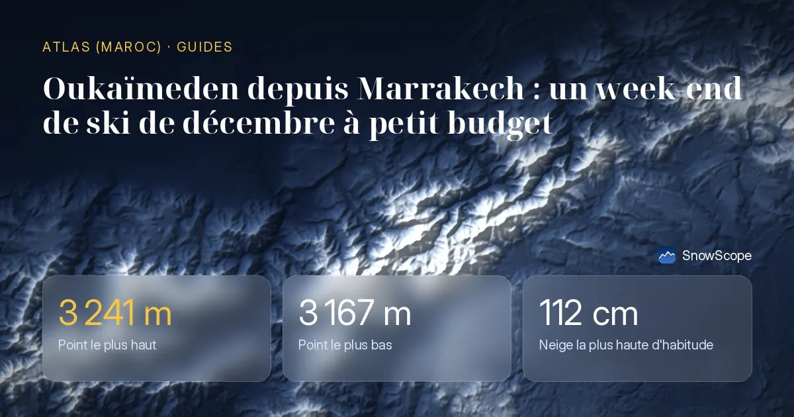

Oukaïmeden depuis Marrakech : un week-end de ski de décembre à petit budget
Oukaïmeden se situe à 50 km de Marrakech à vol d'oiseau—assez proche pour un week-end, assez haut pour retenir la neige quand la ville brûle. Mais décembre, c'est un pari : un mi-mois typique n'apporte que 16 cm à mi-pente, vous devez chasser la neige fraîche, pas la date.
Consultez les prévisions neige en temps réel pour Oukaimden ski resort sur l'application SnowScopeHauteurs de neige, alertes poudreuse et carte 3D, gratuitement.
Pourquoi l'altitude compte, et pourquoi elle ne compte pas
La station s'étend de 2 600 m au pied à 3 258 m au sommet. On s'attendrait à ce que le sommet soit bien plus enneigé que les pentes basses, mais décembre dans l'Atlas brise cette règle. Le 15 décembre, un hiver typique donne 15 cm au pied, 16 cm à mi-pente (2 929 m) et 17 cm au sommet. La différence est à peine un centimètre.
Cela arrive parce que les tempêtes comptent bien plus que les mètres. La neige tombe sur toute la montagne à la fois, puis fond ensemble entre les événements. En début de saison, le soleil et le vent enlèvent les pentes basses plus vite, donc les zones moyennes et supérieures restent proches en épaisseur. Ce n'est qu'à partir de janvier que l'altitude crée un vrai écart.

La première semaine de décembre : un mauvais pari
Le 1er décembre, mi-pente a généralement 12 cm. Cela semble être un début, mais 28 % des hivers sont quasi nus—moins de 5 cm—à cette date. Seulement 4 % des hivers ont constitué une base de 50 cm à la première semaine de décembre. Si vous avez un week-end libre début décembre, la montagne est belle à arpenter (apportez des vêtements chauds et des bottes), mais le ski est une loterie.
La première neige durable arrive généralement vers le 5 novembre, mais la neige de novembre disparaît souvent en quelques jours. Prévoyez un voyage en décembre seulement si vous pouvez attendre une prévision de chute fraîche et partir dans les deux ou trois jours.

Mi-décembre à Noël : les chances s'améliorent
Le 15 décembre, l'épaisseur de neige à mi-pente monte à 16 cm dans un hiver moyen. Plus important encore, 43 % des hivers ont maintenant 25 cm ou plus—double la part du 1er décembre. Le jour de Noël voit 20 cm typique, et 41 % des hivers franchissent la ligne des 25 cm.
Malgré tout, 20 % des décembres sont encore quasi nus le 15. Seulement 11 % des hivers ont une vraie base de 50 cm à mi-décembre à mi-pente. L'hiver dernier (2025-26) a cassé ce schéma : 33 cm le 15 décembre, puis une montée nette à 78 cm à Noël. Cela arrive environ un hiver sur dix.
Saint-Sylvestre : votre date la plus sûre
Le 31 décembre, l'épaisseur typique atteint 24 cm à mi-pente, et la moitié de tous les hivers ont dépassé 25 cm. Au sommet (3 258 m), 20 % des hivers ont constitué 50 cm avant la fin de l'année, comparé à seulement 15 % à mi-pente. Si vous devez choisir une date en décembre, Saint-Sylvestre est statistiquement votre meilleure chance.
Pourtant, aucune semaine en décembre n'est garantie. Le schéma sur 46 hivers montre que seulement 13 % des années connaissent une semaine complète de neige moyenne à 50 cm ou plus à mi-pente. Un seul bon week-end après une tempête vaut mieux qu'une semaine complète d'espoir.
La vue d'ensemble : décembre n'a pas changé
Au cours de quatre décennies, décembre est resté imprévisible. La neige à mi-pente le 15 décembre a moyenné 14 cm pour les hivers 1980-81 à 1994-95 et 11 cm pour les hivers 2011-12 à 2025-26. Dans les deux périodes, environ 40 % des hivers ont atteint 25 cm à mi-mois. Décembre maintenant est aussi fin et aussi variable qu'il l'était il y a quarante ans.
En mars, le tableau se transforme : la neige culmine alors, avec 53 cm typique à mi-pente et 58 cm au sommet. Si décembre échoue, repousser votre voyage à fin février ou mars signifie des chances bien plus élevées de neige profonde.
Logistique et ce qu'il faut apporter
Les forfaits et la location d'équipement se règlent sur place—il n'y a pas de tarif officiel en ligne. Demandez aux habitants ou à votre hébergement les prix avant de vous engager. Le transport depuis Marrakech et une nuit à la montagne représentent généralement la majeure partie de votre budget.
Apportez des vêtements chauds, des bottes de marche (la montagne vaut le détour même sans neige), et une lampe frontale si vous conduisez après la tombée de la nuit. La route de montagne demande de la prudence, surtout après une tempête. Vérifiez les conditions de la route avant de quitter Marrakech, et conduisez lentement.
Conseils aux skieurs
- Regardez la prévision de neige dans l'Atlas, puis partez dans les deux ou trois jours suivant une tempête. Cette seule fenêtre est plus fiable que n'importe quelle date du calendrier.
- Si début décembre est nu, ne désespérez pas : arpentez le terrain élevé, profitez de la vue, et prévoyez de revenir fin février ou mars quand la neige est la plus profonde.
- Sur la route depuis Marrakech, partez tôt pour atteindre la montagne à la lumière du jour. Les routes de montagne sont raides et étroites, et la visibilité chute rapidement après le coucher du soleil.
- Apportez des vêtements chauds même si la neige est fine : le vent est fort au-dessus de 2 600 m, et vous pouvez geler rapidement une fois que le soleil dip au-dessous des arêtes.
- Avant de louer des skis ou une planche, demandez le prix sur place—il n'y a pas de tarif officiel à comparer en ligne.
À propos de ces chiffres
Les hauteurs de neige des stations sont la neige la plus épaisse sur le haut du domaine à la date indiquée ; ce sont des estimations pour une zone, pas une mesure en un point. Les prévisions peuvent changer. Consultez toujours le bulletin d'avalanche officiel avant le hors-piste.
Citer ce bulletin
Pour la recherche, l'enseignement ou la presse : chiffres et graphiques réutilisables librement sous CC BY 4.0 avec cette citation.
SnowScope (2026), Oukaïmeden depuis Marrakech : un week-end de ski de décembre à petit budget, https://snowscope.app/blog/fr/2026/11/oukaimeden-depuis-marrakech-week-end-ski-decembre-budget.html, consulté le 2026-11-14
SnowScope (Atlas Labs). (2026, November 14). Oukaïmeden depuis Marrakech : un week-end de ski de décembre à petit budget. SnowScope snow reports. https://snowscope.app/blog/fr/2026/11/oukaimeden-depuis-marrakech-week-end-ski-decembre-budget.html
BibTeX
@misc{snowscope2026oukaimedendepuismarrakec,
author = {{SnowScope (Atlas Labs)}},
title = {Oukaïmeden depuis Marrakech : un week-end de ski de décembre à petit budget},
year = {2026},
month = nov,
howpublished = {\url{https://snowscope.app/blog/fr/2026/11/oukaimeden-depuis-marrakech-week-end-ski-decembre-budget.html}},
note = {Published 2026-11-14 13:29 UTC; accessed 2026-11-14}
}· CC BY 4.0 · Méthodes, données et outils →
Suivre Oukaimden ski resort
Gratuit : un message quand la neige arrive, et la météo chaque matin.
Autres bulletins neige

Oukaimden a reçu 14 cm de neige fraîche en 72 heures, dont 5 cm au cours des dernières 24 heures. La station compte maintenant environ 3 cm sur le …

Pas encore de neige à Oukaïmeden le 12 novembre. Les pics de l'Atlas sont dénudés ; la saison hivernale atteint généralement son apogée en mars avec 58 cm au sommet.

Décembre n'apporte que 18 cm de profondeur typique à mi-montagne à Oukaimeden, contre 53 cm en mars. Le début de saison est maigre mais possible. Données du 13 novembre 2026.